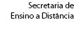
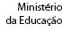
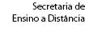
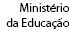

Trigonometria e Raios Luminososv2.0
Neste software, você poderá analisar matematicamente o comportamento de raios luminosos quando refratam e refletem em uma superfície plana. Para isso, será necessário utilizar seus conhecimentos em trigonometria.


 


